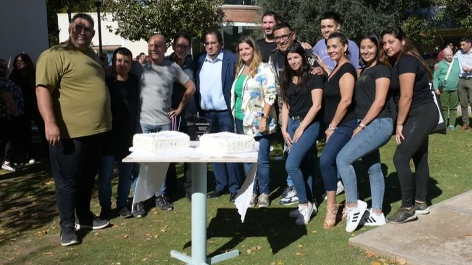
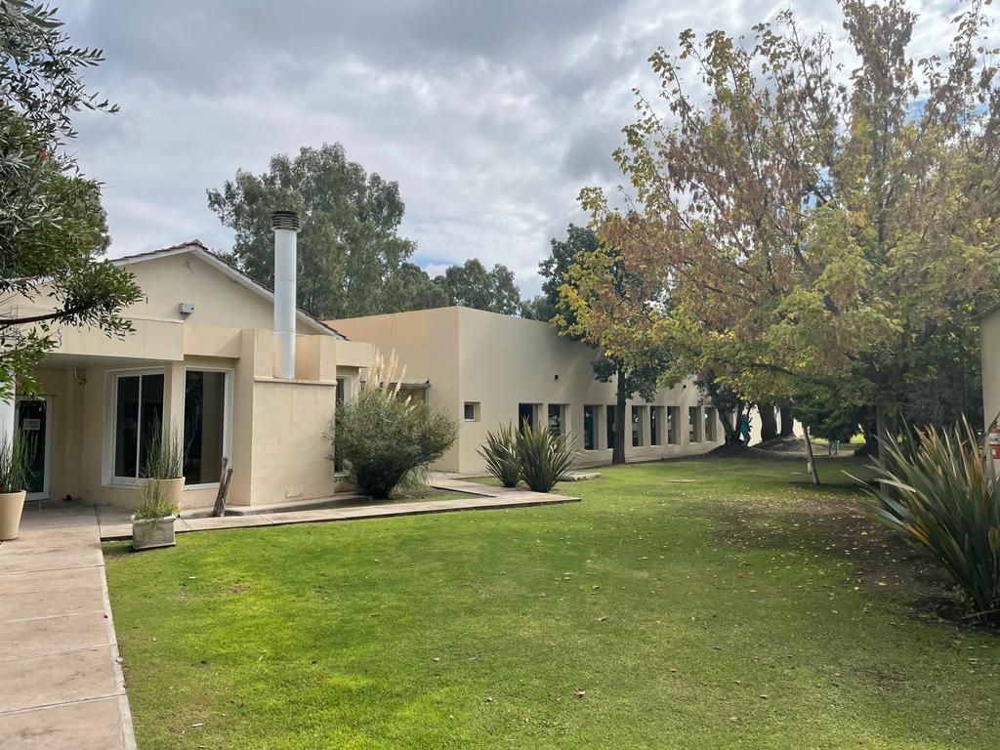
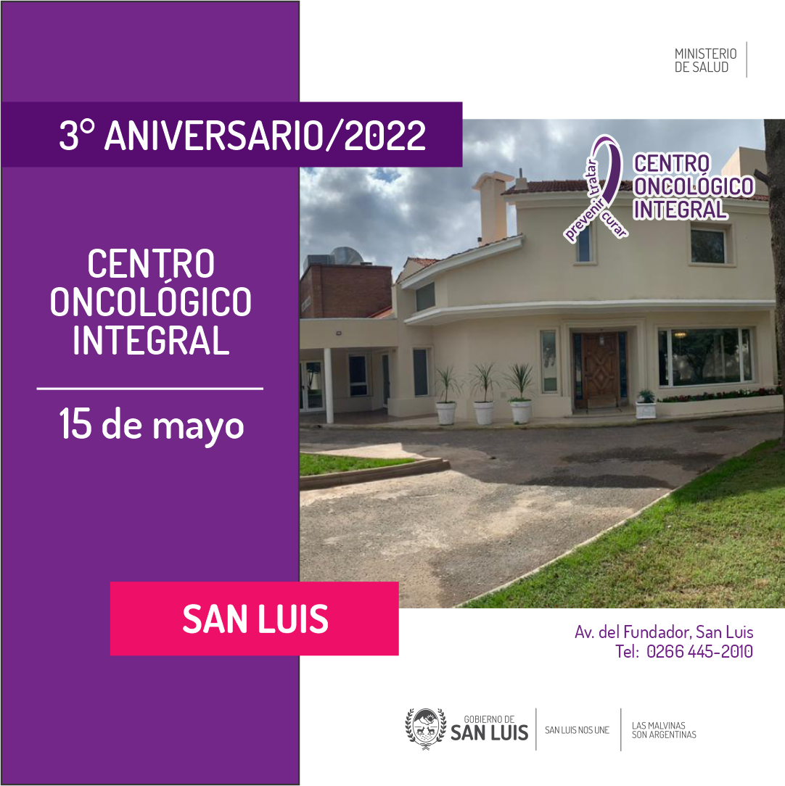
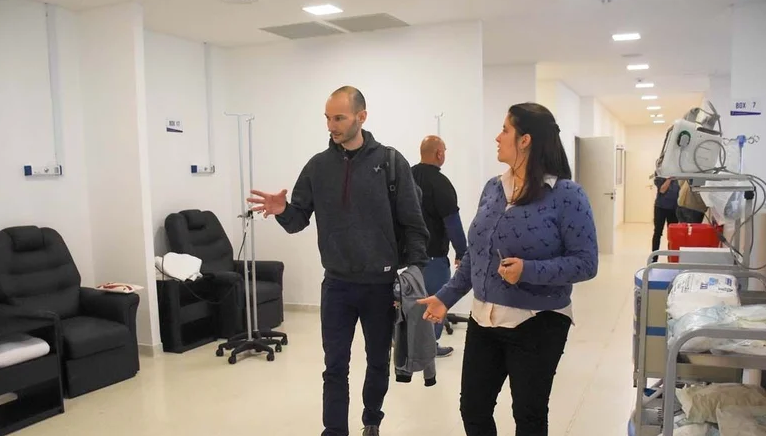
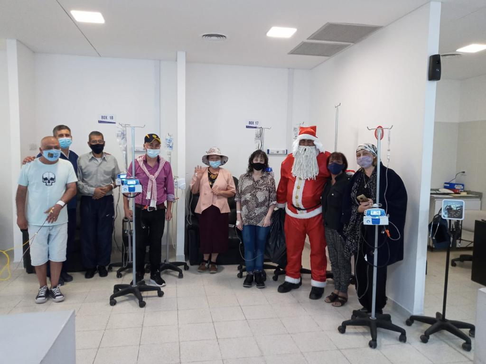
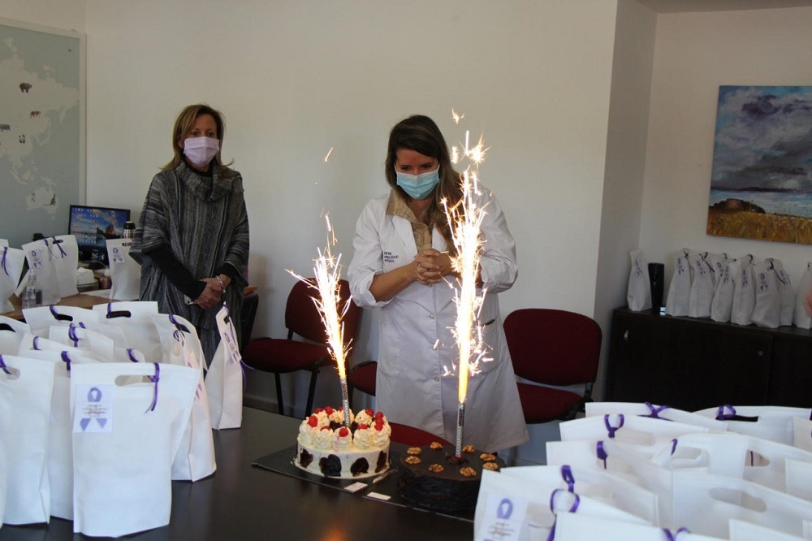
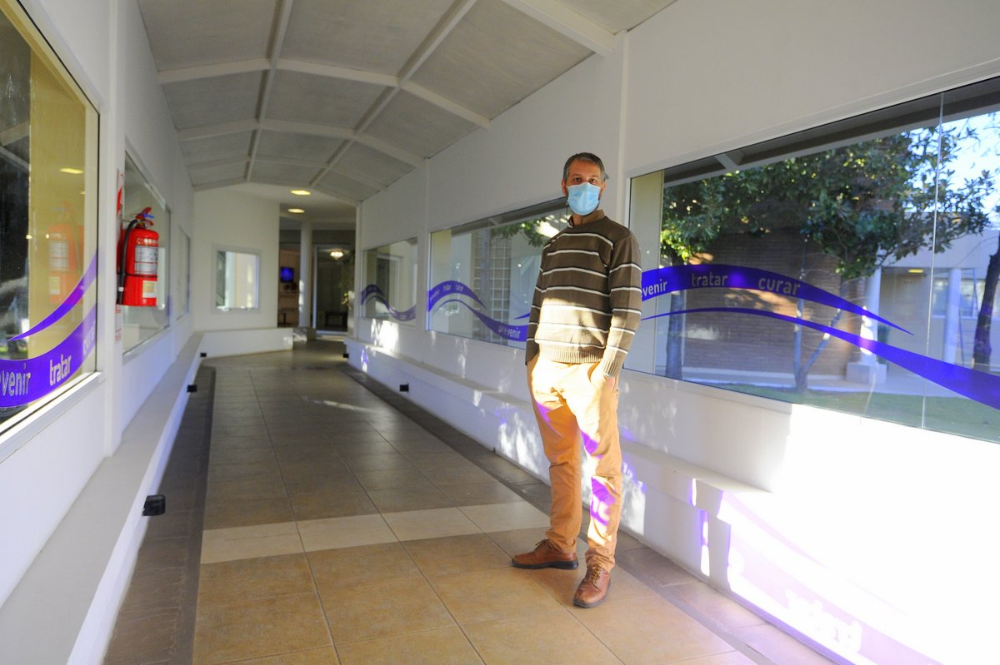
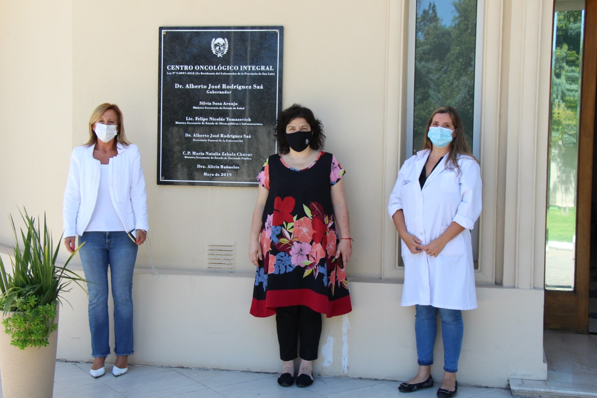

Inicio
Galeria
Noticias
Especialidades
Contacto
Noticias
El Centro Oncológico Integral celebró su 4º aniversario

El Centro Oncológico ya atiende el doble de pacientes que en 2020

El Centro Oncológico cumple su tercer aniversario

"El Centro Oncológico Integral es uno de los mejores del país"

El Centro Oncológico cerró el año con un festejo especial

El Centro Oncológico y el Laboratorio provincial cumplen un nuevo aniversario

Centro Oncológico Integral: desde su inauguración ya fueron atendidas más de 30 mil consultas

Vizzotti destacó el sentido integrador y social que tiene el Centro Oncológico para los sanluiseños
